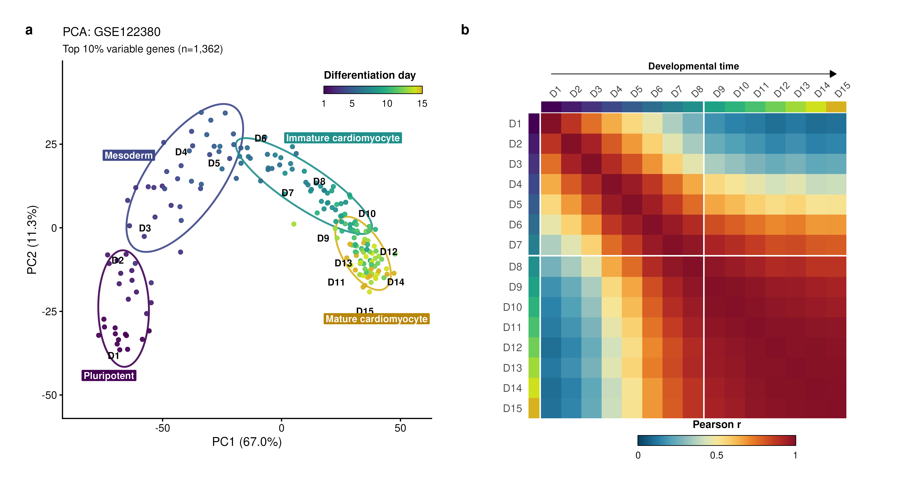
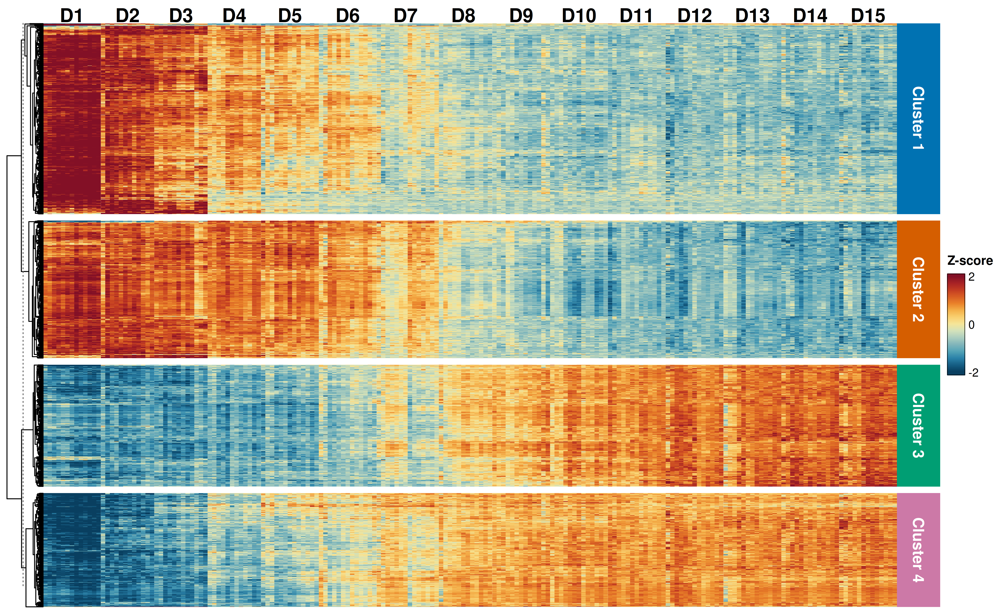
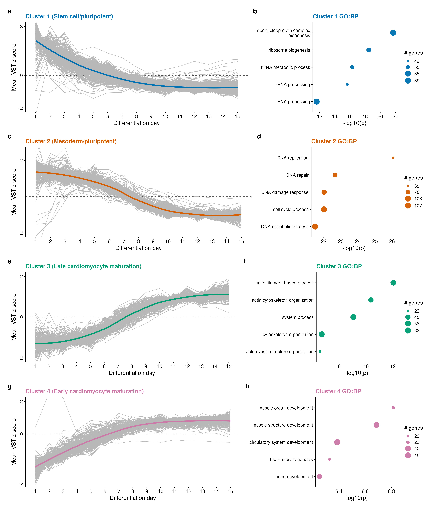
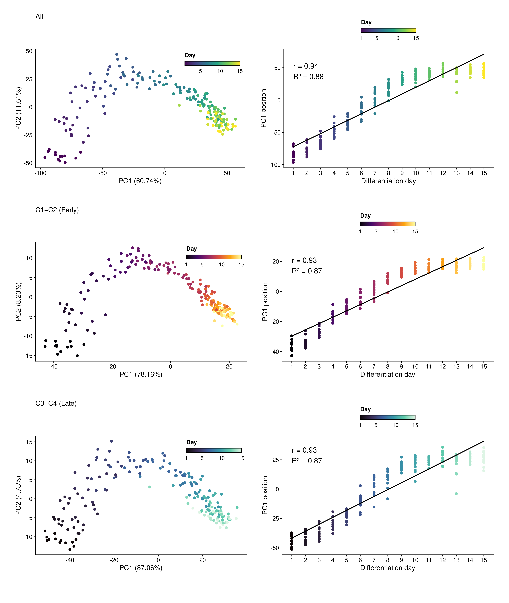
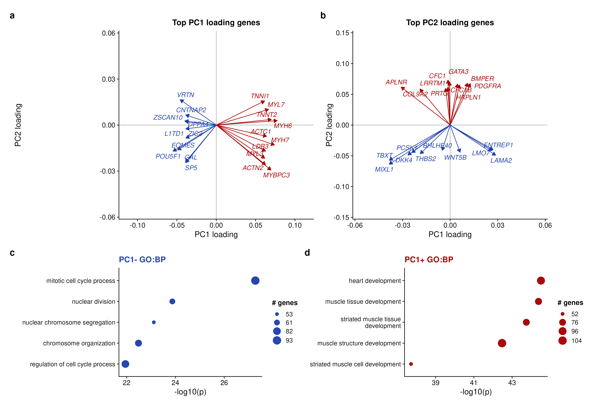
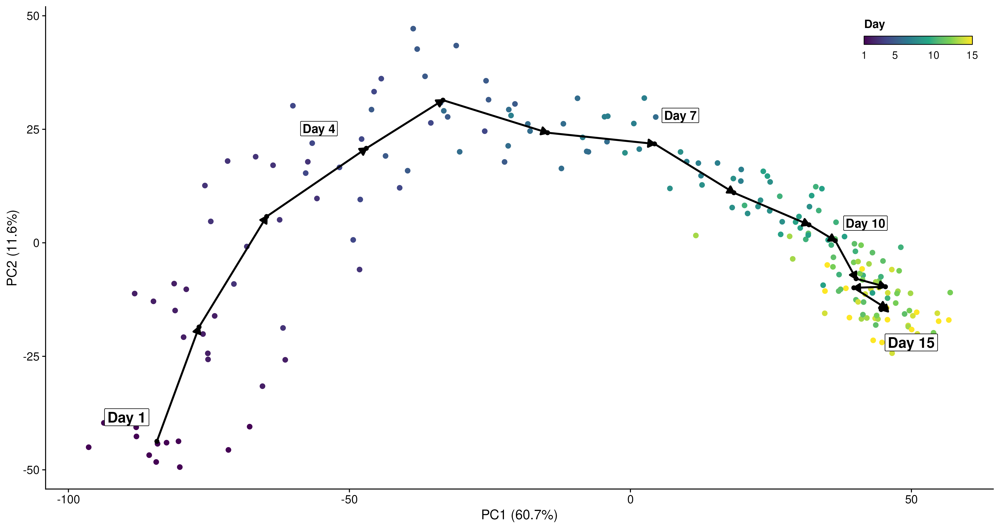
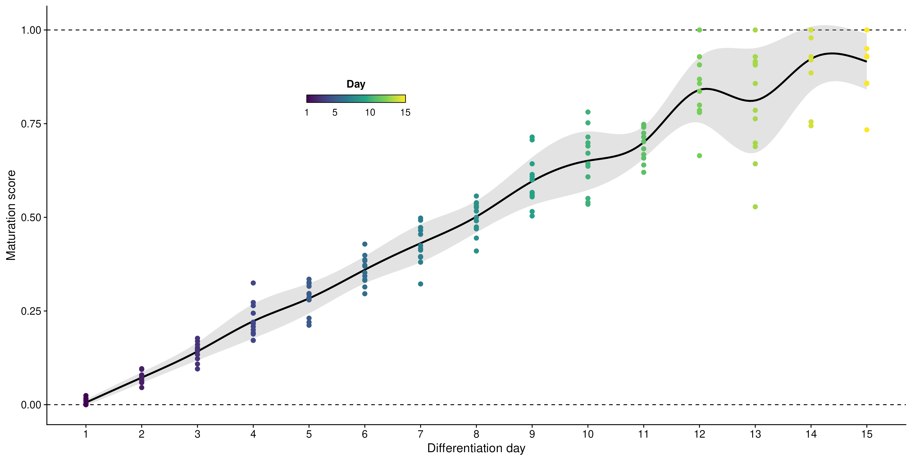
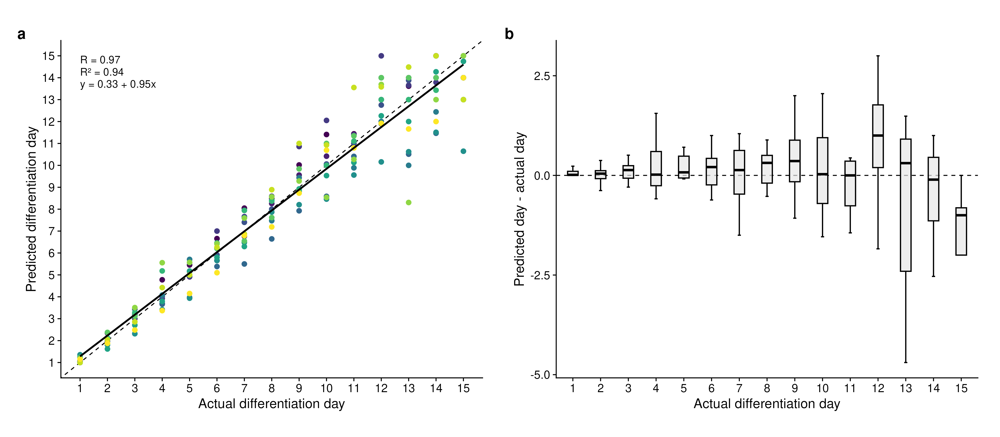
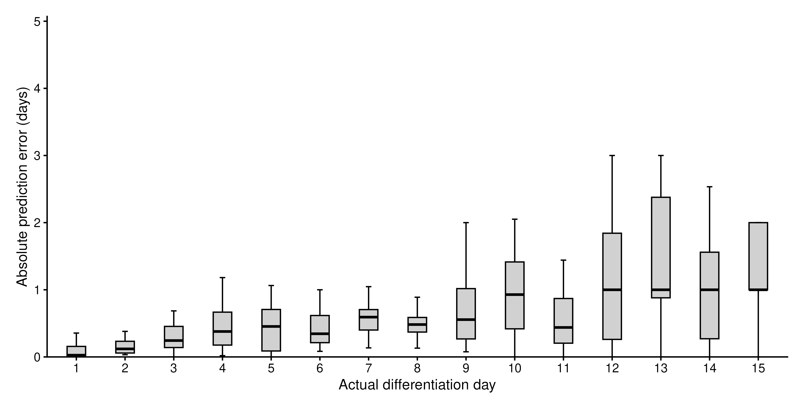

Differentiation timing score
Differentiation timing score
1 Introduction
Samples collected on the same day of a differentiation experiment can differ in their developmental progression. Bulk RNA-seq measures gene expression across these samples, providing a way to assess their progression relative to a reference time course. This tutorial uses time-dependent gene expression to estimate where each sample falls along that reference.
The tutorial is intended for researchers who have processed bulk RNA-seq data and want to compare differentiation timing across samples or experimental conditions. It explains temporal-gene selection, principal component analysis (PCA), trajectory fitting, and validation using a cardiomyocyte differentiation time course. The code examples assume basic familiarity with R and RNA-seq expression matrices.
The workflow has three stages:
- Select genes whose expression changes across the reference time course.
- Fit PCA to the mean expression profile at each reference timepoint and connect the resulting points in time order.
- Project each sample onto the trajectory.
Each sample receives a predicted reference time, a differentiation score scaled from 0 to 1, and a squared distance from the trajectory. The predicted time and score describe differentiation relative to the selected reference. The distance helps assess how closely the sample resembles the reference at its predicted position.
2 Function inputs
The workflow uses two functions. get_temporal_genes() selects time-dependent genes from raw counts and variance-stabilized (VST) expression in the reference samples. score_differentiation_timing() then uses the selected genes and normalized expression, such as VST expression, to fit the trajectory and score samples.
Both matrices must have genes in rows and samples in columns, with unique gene and sample identifiers. Gene selection requires integer-like, unnormalized counts and a VST matrix with the same gene and sample identifiers. The metadata must contain one row per sample, a sample ID column, and a numeric timepoint column. The default column names are sample_id and day_numeric; use sample_id_col and time_col to specify other names.
By default, the scoring function uses all supplied samples to define the reference. For a study with reference and experimental samples, select temporal genes from the reference cohort and pass its sample IDs through reference_samples when scoring. Both functions require at least two distinct, finite numeric timepoints in the reference. Samples outside the reference can have missing timepoints.
Gene selection requires the Bioconductor packages DESeq2 and edgeR. Install them before running the examples:
3 Reference dataset
The example uses processed data from NCBI GEO accession GSE122380, a bulk RNA-seq time course of human induced pluripotent stem cell differentiation into cardiomyocytes. The reference contains 192 samples from 13 cell lines collected across differentiation days 1 through 15.
The repository includes sample metadata, a raw gene-count matrix, and a VST expression matrix. These files contain the inputs needed for gene selection and scoring, following read processing, alignment, quantification, and variance-stabilizing transformation.
To follow the example, download or clone the repository and open R in its root directory. Load the data with the supplied loader, which puts both matrices in metadata sample order:
source('data/load_GSE122380_data.R')
source('functions/get_temporal_genes.R')
source('functions/score_differentiation_timing.R')
reference_data <- load_GSE122380_data()
metadata <- reference_data$metadata
counts <- reference_data$counts
vst <- reference_data$vstThe table below shows the sample and cell-line coverage at each differentiation day.
| Metric | D1 | D2 | D3 | D4 | D5 | D6 | D7 | D8 | D9 | D10 | D11 | D12 | D13 | D14 | D15 |
|---|---|---|---|---|---|---|---|---|---|---|---|---|---|---|---|
| Samples | 13 | 12 | 12 | 12 | 13 | 13 | 13 | 13 | 13 | 13 | 13 | 13 | 13 | 13 | 13 |
| Cell lines | 13 | 12 | 12 | 12 | 13 | 13 | 13 | 13 | 13 | 13 | 13 | 13 | 13 | 13 | 13 |
Before fitting the trajectory, examine how expression changes across the reference time course. Figure 1 shows a PCA of the most variable VST genes and correlations between day-mean expression profiles. Together, these views help assess whether sample expression follows the known differentiation sequence.

The ordering by day supports fitting a trajectory to this reference. The scoring PCA below focuses on temporal genes and the mean expression profile at each reference timepoint.
4 Scoring workflow
4.1 Select temporal genes
First, select genes whose expression changes across the reference time course. get_temporal_genes() applies three sequential filters, using raw counts for the expression filter and DESeq2 likelihood-ratio test (LRT), followed by VST expression for the range filter. A gene must pass all three filters to enter the trajectory model.
- Expression filter. The function normalizes counts using the trimmed mean of M-values (TMM) method and calculates counts per million (CPM). For each gene, it calculates the mean CPM at each reference timepoint and keeps the gene when its largest timepoint mean reaches the expression threshold.
- DESeq2 likelihood-ratio test. The full model includes categorical time and any requested adjustment covariates. The reduced model contains the adjustment covariates without time. Genes with an adjusted LRT p-value below the selected threshold continue to the final filter.
- VST-range filter. The function calculates the mean VST expression at each reference timepoint and keeps genes whose range across those means reaches the selected threshold.
The LRT tests whether adding categorical time improves the count model. If the full and reduced models have maximized log likelihoods ell_full and ell_reduced, the likelihood-ratio statistic is
\[ \mathrm{LR} = 2(\ell_\mathrm{full} - \ell_\mathrm{reduced}). \]
Treating time as a categorical factor allows the test to detect nonlinear expression changes across timepoints. For GSE122380, both models include cell_line to account for differences among cell lines. With adjustment_covariates = 'cell_line', the full model is ~ cell_line + day_numeric and the reduced model is ~ cell_line. The function converts day_numeric to a factor for this test. If no adjustment covariates are supplied, the reduced model is the intercept-only model, ~ 1.
source('functions/get_temporal_genes.R')
temporal_selection <- get_temporal_genes(
raw_counts = counts,
vst_expression = vst,
metadata = metadata,
sample_id_col = 'sample_id',
time_col = 'day_numeric',
adjustment_covariates = 'cell_line'
)
temporal_genes <- temporal_selection$temporal_genesFor a dataset containing several experimental groups, use reference_group_col and reference_group_value together to select one group as the reference. These arguments restrict the input to that group before applying the three filters and fitting the DESeq2 models.
The example uses the default thresholds: a maximum day-mean TMM CPM of at least 10, an adjusted LRT p-value below 1e-7, and a day-mean VST range of at least 0.6. Table 4.1 shows how many genes remain after filtering. When applying the method to another study, choose thresholds that account for its library sizes, sample size, timepoint coverage, and experimental design.
| Metric | Value |
|---|---|
| Genes in the aligned count/VST input | 13,615 |
| Genes with maximum day-mean TMM CPM >= 10 | 11,411 |
| Genes passing LRT adjusted p-value < 1e-7 | 10,863 |
| Genes passing all filters and used for scoring | 8,215 |
To inspect the selected expression patterns, Figure 2 shows the first 1,500 temporal genes in LRT result order. PCA, scoring, and validation use the complete set of selected temporal genes.

Figure 3 groups the heatmap genes into four clusters to summarize their temporal expression patterns. Gene Ontology (GO) Biological Process enrichment helps interpret the processes represented in each cluster, using the 1,500 displayed genes as the enrichment universe. Clustering and GO enrichment provide biological context for the plots; the scoring model continues to use all selected temporal genes together.

4.2 Fit the PCA reference space
Next, use the selected temporal genes to define the reference PCA space. The scoring function first averages expression across reference samples at each timepoint, then fits PCA to these mean profiles. Each timepoint therefore contributes one profile to the fit, and the resulting trajectory follows the mean expression changes across time.
Let \(\mathbf{x}_i\) be the normalized expression vector for sample \(i\), restricted to the selected temporal genes. For a reference timepoint \(t\), let \(\bar{\mathbf{x}}_t\) be the mean vector across its reference samples:
\[ \bar{\mathbf{x}}_t = \frac{1}{n_t}\sum_{i:\,t_i=t} \mathbf{x}_i. \tag{1} \]
The function centers each gene across the timepoint means and retains its original variance scale when fitting PCA. It keeps the smallest number of principal components (PCs) that together explain at least 99% of the variance between timepoint means. Let \(\boldsymbol{\mu}\) be the mean of those profiles and let \(W\) contain the retained PCA loading vectors. The PCA coordinates for sample \(i\) are
\[ \mathbf{z}_i = (\mathbf{x}_i - \boldsymbol{\mu})W. \tag{2} \]
This transformation places reference and experimental samples in the same reference PCA space. In the GSE122380 fit, seven PCs meet the 99% variance target. The number of retained PCs depends on the reference cohort and the selected temporal genes.

PCA loadings identify the genes that contribute most strongly to each axis. Figure 5 labels genes with the largest positive and negative PC1 and PC2 loadings and shows GO enrichment for the strongest PC1 loadings. This analysis helps interpret the expression changes represented by the reference axes.

The sign of a PCA axis is arbitrary. For readability, PC1 is oriented toward increasing differentiation day in the figures. Distances and timing scores are preserved when an axis is reversed.
4.3 Build and score the reference trajectory
After fitting PCA, the function maps each reference timepoint mean to a centroid in the retained PC space. It connects adjacent centroids in time order to form a trajectory made of finite line segments, also called a polyline. This path can bend across several PCs as expression changes during differentiation.
For one segment, let \(\mathbf{a}\) and \(\mathbf{b}\) be its start and end centroids, and let \(\mathbf{z}\) be a sample’s PCA coordinate. The segment direction is \(\mathbf{v}=\mathbf{b}-\mathbf{a}\). The closest point on the finite segment is
\[ \alpha = \operatorname{clip}_{[0,1]} \left( \frac{\langle \mathbf{z}-\mathbf{a},\mathbf{v}\rangle} {\langle \mathbf{v},\mathbf{v}\rangle} \right), \qquad \mathbf{q}=\mathbf{a}+\alpha\mathbf{v}. \tag{3} \]
Clipping \(\alpha\) to the interval from 0 to 1 keeps the projected point within the segment. The function evaluates every segment and selects the one with the smallest squared distance \(\lVert\mathbf{z}-\mathbf{q}\rVert^2\). It then interpolates time between that segment’s endpoints:
\[ \widehat{t}=t_a+\alpha(t_b-t_a), \qquad s=\frac{\widehat{t}-t_{\min}}{t_{\max}-t_{\min}}. \tag{4} \]
Here, \(t_a\) and \(t_b\) are the segment endpoint times, \(\widehat{t}\) is the predicted time, and \(s\) is the differentiation score. The earliest and latest reference times correspond to scores of 0 and 1. Segment clipping keeps every prediction within this reference time range.
The function omits segments whose endpoints have identical coordinates. If the trajectory folds back near itself, a sample can lie close to several segments with different time assignments. Review the trajectory plot and squared distances when assessing these cases, because a small distance alone may leave the time assignment ambiguous.
source('functions/score_differentiation_timing.R')
timing_fit <- score_differentiation_timing(
expression_matrix = vst,
metadata = metadata,
temporal_genes = temporal_genes,
sample_id_col = 'sample_id',
time_col = 'day_numeric'
)
timing_fit$scores[, c(
'sample_id',
'observed_time',
'predicted_time',
'differentiation_score',
'squared_distance'
)]Figure 6 shows the fitted trajectory in the first two PCs. Scoring uses distances across all retained PCs, so the figure provides a two-dimensional view of the fitted path.

Time is interpolated within each segment using its two endpoint times. The trajectory can therefore have different distances per unit time across successive intervals. Figure 7 shows the scores obtained by projecting the reference samples back onto this path. Because these samples also define the model, the figure describes its fit to the reference cohort.

The spread within each day shows variation in predicted timing among reference samples. To assess prediction in samples excluded from model fitting, the next section holds out each cell line in turn.
5 Leave-one-cell-line-out validation
Leave-one-cell-line-out validation tests how well the reference trajectory predicts differentiation time in a cell line excluded from training. For each cell line, the workflow:
- removes that cell line from the training reference;
- selects temporal genes using the remaining cell lines;
- fits the PCA and centroid trajectory using the remaining cell lines; and
- projects the held-out samples onto that fitted trajectory.
Temporal-gene selection, including the count-based DESeq2 LRT, is repeated in every fold. All folds use the supplied VST matrix, since the repository contains the transformed values without the upstream transformation procedure. The results therefore measure transfer to held-out cell lines within this processed cohort, conditional on the shared VST matrix. Assessing transfer to an independently processed study requires a separate validation dataset.
The validation function also labels genes with positive Spearman correlations with time as maturation genes and those with negative correlations as progenitor genes. These labels summarize fold-specific expression patterns. The accuracy results below use the complete temporal-gene set selected in each fold.
source('functions/get_temporal_genes.R')
source('functions/score_differentiation_timing.R')
source('functions/run_loo_maturation.R')
loo_validation <- run_loo_maturation(
counts = counts,
vst = vst,
metadata = metadata
)
loo_validation$summaryThe summary includes held-out predictions for all 13 cell lines. Figure 8 displays 12 cell lines in a 3 by 4 layout; predictions for cell line 19190 are included in the summary and the remaining validation figures.
| Metric | Value |
|---|---|
| Held-out cell lines | 13 |
| Held-out samples | 192 |
| Correlation between actual and predicted day | 0.979 |
| Squared Pearson correlation | 0.959 |
| Mean absolute error | 0.55 days |
| Median absolute error | 0.30 days |
| Predictions within 1 day | 82.3% |
| Predictions within 2 days | 97.9% |
Across this cohort, the Pearson correlation between held-out predicted and observed days is 0.979. The median absolute error is 0.30 days, and 82.3% of predictions fall within one day of the observed time. These results support prediction within the GSE122380 reference and its processing pipeline. Performance in another study will depend on its biological and technical similarity to this reference.

Prediction patterns vary across cell lines. Review these panels to identify systematic timing shifts or intervals with weaker agreement. Pearson \(r\) and \(r^2\) describe association; use the absolute prediction errors below to assess accuracy on the day scale.

The identity line marks exact agreement between predicted and observed days. The fitted line summarizes their linear relationship across the cohort. Sample-level deviations from identity determine the timing errors.
For held-out sample \(i\), absolute prediction error is
\[ e_i = |\widehat{t}_i - t_i|. \tag{5} \]
Figure 10 summarizes the mean absolute error at each observed day. The error bars show one standard deviation across held-out samples at that day.

Compare errors across days to identify intervals where predictions are less accurate. The overall summary can conceal such differences, particularly when sample coverage varies across the time course.
6 Interpreting results
6.1 Read the score and distance together
Use the sample-level timing_fit$scores table to read the result:
predicted_timegives the sample’s position on the original reference-time scale.differentiation_scorerescales that position so the earliest and latest reference times are 0 and 1.squared_distancemeasures how close the sample is to its nearest trajectory segment in the retained PCA space.
Interpret the score in relation to the reference timepoints. A score of 0.5 places the predicted time halfway between the earliest and latest reference times. In this day 1 to day 15 reference, it corresponds to a predicted day of 8. The biological meaning of that position depends on the differentiation process and the stages represented in the reference.
Read squared_distance alongside the score. A sample with a large distance has an expression profile that fits the reference path poorly, even though the function assigns it a predicted time. Compare its distance with those of reference samples and consider possible differences in cell composition, experimental conditions, or batch before drawing a biological conclusion.
6.2 Apply the method to another study
Choose reference samples with known timepoints that span the differentiation stages relevant to the study. Select temporal genes from those reference samples, then use the same reference to fit PCA and the trajectory. Keeping experimental samples out of both fitting steps allows their scores to be interpreted relative to the reference.
For example, if metadata for your own study identifies samples as reference in a group column, the code below selects genes from that group and scores every sample. Here, counts, vst, and metadata are your study’s aligned inputs, with sample_id and day_numeric columns in the metadata. The scoring matrix contains both reference and experimental samples:
temporal_selection <- get_temporal_genes(
raw_counts = counts,
vst_expression = vst,
metadata = metadata,
reference_group_col = 'group',
reference_group_value = 'reference'
)
timing_fit <- score_differentiation_timing(
expression_matrix = vst,
metadata = metadata,
temporal_genes = temporal_selection$temporal_genes,
reference_samples = temporal_selection$reference_samples
)Experimental samples can have missing timepoints when the group arguments above identify the reference samples with known times. Alternatively, subset the inputs to reference samples for gene selection, then pass the combined expression matrix and metadata to the scorer with the selected reference IDs. Include relevant adjustment covariates in gene selection when the reference design supports them.
Before comparing scores, check that gene and sample identifiers match across inputs and that reference and experimental expression values use compatible normalization. Compare scores within a shared reference model and review experimental-sample distances against the reference distances. If the biological process or batch structure differs substantially, choose a suitable reference and validate prediction in that setting.
7 References
- Love MI, Huber W, Anders S. Moderated estimation of fold change and dispersion for RNA-seq data with DESeq2. Genome Biology. 2014;15:550. doi:10.1186/s13059-014-0550-8
- Robinson MD, McCarthy DJ, Smyth GK. edgeR: a Bioconductor package for differential expression analysis of digital gene expression data. Bioinformatics. 2010;26(1):139–140. doi:10.1093/bioinformatics/btp616
- Strober BJ, Elorbany R, Rhodes K, et al. Dynamic genetic regulation of gene expression during cellular differentiation. Science. 2019;364(6447):1287–1290. doi:10.1126/science.aaw0040
- NCBI GEO accession GSE122380
8 Session information
## R version 4.6.1 (2026-06-24)
## Platform: aarch64-apple-darwin23
## Running under: macOS Tahoe 26.5.1
## Matrix products: default
## BLAS: /Library/Frameworks/R.framework/Versions/4.6/Resources/lib/libRblas.0.dylib
## LAPACK: /Library/Frameworks/R.framework/Versions/4.6/Resources/lib/libRlapack.dylib; LAPACK version 3.12.1
## locale:
## [1] C.UTF-8/C.UTF-8/C.UTF-8/C/C.UTF-8/C.UTF-8
## time zone: America/New_York
## tzcode source: internal
## attached base packages:
## [1] grid stats4 stats graphics grDevices utils datasets
## [8] methods base
## other attached packages:
## [1] viridis_0.6.5 viridisLite_0.4.3
## [3] systemfonts_1.3.2 scales_1.4.0
## [5] ragg_1.5.2 patchwork_1.3.2
## [7] org.Hs.eg.db_3.23.1 ggrepel_0.9.8
## [9] ggplot2_4.0.3 edgeR_4.10.1
## [11] limma_3.68.4 DESeq2_1.52.0
## [13] SummarizedExperiment_1.42.0 MatrixGenerics_1.24.0
## [15] matrixStats_1.5.0 GenomicRanges_1.64.0
## [17] Seqinfo_1.2.0 ComplexHeatmap_2.28.0
## [19] clusterProfiler_4.20.0 circlize_0.4.18
## [21] AnnotationDbi_1.74.0 IRanges_2.46.0
## [23] S4Vectors_0.50.1 Biobase_2.72.0
## [25] BiocGenerics_0.58.1 generics_0.1.4
## [27] bookdown_0.47
## loaded via a namespace (and not attached):
## [1] RColorBrewer_1.1-3 rstudioapi_0.19.0 jsonlite_2.0.0
## [4] shape_1.4.6.1 tidydr_0.0.6 magrittr_2.0.5
## [7] magick_2.9.1 ggtangle_0.1.2 rmarkdown_2.31
## [10] farver_2.1.2 GlobalOptions_0.1.4 fs_2.1.0
## [13] vctrs_0.7.3 Cairo_1.7-0 memoise_2.0.1
## [16] ggtree_4.2.0 htmltools_0.5.9 S4Arrays_1.12.0
## [19] SparseArray_1.12.2 gridGraphics_0.5-1 sass_0.4.10
## [22] bslib_0.11.0 htmlwidgets_1.6.4 plyr_1.8.9
## [25] httr2_1.3.0 cachem_1.1.0 igraph_2.3.3
## [28] lifecycle_1.0.5 iterators_1.0.14 pkgconfig_2.0.3
## [31] Matrix_1.7-5 R6_2.6.1 fastmap_1.2.0
## [34] gson_0.2.0 clue_0.3-68 digest_0.6.39
## [37] aplot_0.3.1 enrichplot_1.32.0 colorspace_2.1-3
## [40] ggnewscale_0.5.2 aisdk_1.4.12 textshaping_1.0.5
## [43] RSQLite_3.53.3 labeling_0.4.3 mgcv_1.9-4
## [46] httr_1.4.8 polyclip_1.10-7 abind_1.4-8
## [49] compiler_4.6.1 bit64_4.8.2 fontquiver_0.2.1
## [52] withr_3.0.3 doParallel_1.0.17 S7_0.2.2
## [55] BiocParallel_1.46.0 DBI_1.3.0 ggforce_0.5.0
## [58] MASS_7.3-65 rappdirs_0.3.4 DelayedArray_0.38.2
## [61] rjson_0.2.23 tools_4.6.1 otel_0.2.0
## [64] ape_5.8-1 scatterpie_0.2.6 glue_1.8.1
## [67] callr_3.8.0 nlme_3.1-169 GOSemSim_2.38.3
## [70] cluster_2.1.8.2 reshape2_1.4.5 gtable_0.3.6
## [73] tidyr_1.3.2 XVector_0.52.0 foreach_1.5.2
## [76] pillar_1.11.1 stringr_1.6.0 yulab.utils_0.2.4
## [79] splines_4.6.1 dplyr_1.2.1 tweenr_2.0.3
## [82] treeio_1.36.1 lattice_0.22-9 bit_4.6.0
## [85] tidyselect_1.2.1 locfit_1.5-9.12 fontLiberation_0.1.0
## [88] GO.db_3.23.1 Biostrings_2.80.1 knitr_1.51
## [91] gridExtra_2.3.1 fontBitstreamVera_0.1.1 xfun_0.60
## [94] statmod_1.5.2 stringi_1.8.7 lazyeval_0.2.3
## [97] ggfun_0.2.1 yaml_2.3.12 evaluate_1.0.5
## [100] codetools_0.2-20 gdtools_0.5.1 tibble_3.3.1
## [103] qvalue_2.44.0 BiocManager_1.30.27 ggplotify_0.1.3
## [106] cli_3.6.6 jquerylib_0.1.4 processx_3.9.0
## [109] dichromat_2.0-0.1 Rcpp_1.1.2 png_0.1-9
## [112] parallel_4.6.1 blob_1.3.0 DOSE_4.6.0
## [115] tidytree_0.4.8 ggiraph_0.9.6 enrichit_0.2.0
## [118] purrr_1.2.2 crayon_1.5.3 GetoptLong_1.1.1
## [121] rlang_1.3.0 KEGGREST_1.52.2